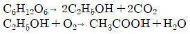

식품기사 (2005-03-20 기출문제)
1과목: 식품위생학
1. 다음 중 기생충질환과 중간숙주의 연결이 잘못된 것은?
- 유구조충 - 돼지
- 무구조충 - 양서류
- 회충 - 채소
- 간흡충 - 민물고기
(정답률: 90%)

2. 다음 설명 중 세균성 식중독의 감염형태가 아닌 것은?
- Salmonella, 장독소형 대장균 등은 음식물을 통해 소화관내 들어와 장내점막에 침투, 정착하여 생체에 부작용을 나타낸다.
- 간염바이러스 A 등은 소화관으로부터 다른 조직에 이동하여 정착하는 증상을 일으킨다.
- Clostridium perfringens는 소화관 내에서 증식하거나 자가분해를 일으켜 독소를 방출함으로써 중독현상을 나타낸다.
- Vibrio cholerae는 식품내에서 독소를 생성하며, 이 독소가 든 음식물을 섭취하여 건강장해를 일으킨다.
(정답률: 34%)
3. 대부분의 식중독 원인균은 식품중에 다량의 균이 존재할때 발병하지만 소량의 균으로도 발병이 가능한 것은?
- Vibrio parahaemolyticus
- Staphylococcus aureus
- Bacillus cereus
- Listeria monocytogenes
(정답률: 36%)
4. 안전성 관련용어를 설명한 것 중 옳은 것은?
- LC50 - 노출된 집단의 50% 치사를 일으키는 유독 물질의 양
- LD50 - 시험동물의 50% 가 표준수명기간 중에 종양을 생성케 하는 유독물질의 양
- TD50 - 노출된 집단의 50% 치사를 일으키는 식품 또는 음료수 중 유독물질의 농도
- GRAS - 해로운 영향이 나타나지 않거나 증명되지 않고 다년간 사용되어 온 식품첨가물에 사용되는 용어
(정답률: 69%)
5. 식품에 오염된 포자를 형성하는 세균을 죽이는데 가장 적합한 방법은?
- 건열멸균
- 고압증기멸균
- 저온살균
- 가스멸균
(정답률: 79%)
6. 엔테로톡신(enterotoxin)을 생산하는 균은?
- Staphylococcus aureus
- Clostridium welchii
- Escherichia coli
- Salmonella enteritidis
(정답률: 68%)
7. 아황산의 표백작용으로 포름알데히드(formaldehyde)가 식품 중에 오랫동안 잔류할 가능성이 있으므로 유해하며, 한 때 물엿에 사용하여 물의를 일으킨 물질은?
- 포르말린(formalin)
- 롱갈릿(rongalite)
- 사이클라메이트(cyclamate)
- 아우라민(auramine)
(정답률: 54%)
8. 방사성 물질로 오염된 식품이 인체내에 들어갈 경우 그의 위험성을 판단하는데 직접적인 영향이 없는 인자는?
- 방사선의 종류와 에너지의 크기
- 식품중의 지방질 함량
- 방사능의 물리학적 및 생물학적 반감기
- 혈액내에 흡수되는 속도
(정답률: 87%)
9. 허용된 타르색소를 사용할 수 있는 식품은?
- 김치류
- 분말 청량음료
- 젓갈류
- 마가린
(정답률: 64%)
10. 식중독 원인균의 하나인 Clostridium botulinum 의 발육 한계 pH는?
- 3.5
- 4.5
- 5.5
- 6.5
(정답률: 47%)
11. 인축공통 전염병과 관계가 먼 것은?
- 결핵
- 탄저병
- 이질
- Q열
(정답률: 75%)
12. 식품공장에서 미생물 오염 원인과 그에 대한 대책을 연결한 것 중 잘못된 것은?
- 작업복 - air shower
- 작업자의 손 - 자외선등
- 공중낙하균 - clean room 도입
- 포장지 - 무균포장장치
(정답률: 82%)
13. 식품에 오염되어 가장 문제되는 방사능 핵종들은 어느 것인가?
- 140Ba, 141Ce
- 137Cs, 90Sr
- 89Sr, 95Zr
- 59Fe, 131I
(정답률: 80%)
14. 식품위생상 역성비누의 사용이 부적당한 경우는?
- 토물(吐物)의 소독
- 수지(手指)의 소독
- 식기(食器)의 소독
- 기구(器具)의 소독
(정답률: 77%)
15. 실내 환경의 세균 오염도를 측정하기 위하여 공중낙하세균 검사를 하려고 한다. 어떤 배지를 사용하는 것이 가장 합당한가?
- Lactose broth
- Endo agar
- EMB agar
- Plate count agar
(정답률: 60%)
16. HACCP는 다음의 어떤 사항에 초점을 맞춘 것인가?
- 식중독 발생 후 문제해결
- 식품 이동경로 중의 무작위 검사
- 식품의 전반적인 안전성의 확보
- 식품안전관리를 위한 문서작업
(정답률: 89%)
17. 우유 중에서 검출될 수 있는 매개성 전염병원균이 아닌것은?
- 결핵균
- 디프테리아균
- 브루셀라균
- 장염 비브리오균
(정답률: 54%)
18. 카드뮴에 의한 만성중독은 인체 내의 어떤 무기질 대사와 관련이 있는가?
- Fe
- Ca
- Cu
- Na
(정답률: 45%)
19. 식품첨가물에 대한 설명으로 옳지 않은 것은?
- 식품의 품질을 개량하여 보존성, 기호성 및 식품의 가치를 증진시킬 목적으로 의도적으로 첨가하는 것을 말한다.
- 식품첨가물의 독성시험은 급성 독성시험, 아급성 독성시험, 만성독성시험의 3단계로 구분된다.
- 식품첨가물은 화학적 합성품과 천연물의 두 종류로 크게 구분된다.
- 식품첨가물 공전에 허용된 모든 식품첨가물은 사용자가 그 대상식품과 사용량을 임의로 결정할 수 있다.
(정답률: 91%)
20. 식품포장용기로서 유리에 대한 설명으로 적합하지 않은 것은?
- 유리재질에는 경질유리와 연질유리가 있다.
- 유리는 투명하며 위생적이고 기밀성이 좋다.
- 비교적 독성이 적으나, 사용원료에 따라서는 비소, 납등 중금속이 드물게 문제될 수 있다.
- 유리에서 제조과정 중 사용된 가소제가 용출될 수 있다.
(정답률: 64%)
2과목: 식품화학
21. 다이어트 식품소재로 사용되는 복합 다당류인 글루코만난(glucomannan)을 함유하고 있는 것은?
- 토란
- 카사바
- 곤약
- 돼지감자
(정답률: 64%)
22. 대두 올리고당을 구성하는 스타키오스와 라피노오스를 구성하는 당류가 아닌 것은?
- 포도당
- 과당
- 갈락토오스
- 맥아당
(정답률: 37%)
23. 자외선을 받아서 비타민 D2 물질이 될 수 있는 전구물질은?
- 에르고스테롤(ergosterol)
- 스티그마스테롤(stigmasterol)
- 디하이드로콜레스테롤(dehydrocholesterol)
- 베타-싸이토스테롤(β-sitosterol)
(정답률: 78%)
24. 근육에 존재하는 알부민(albumin)계의 단백질은?
- lactalbumin
- myogen
- ovalbumin
- serum albumin
(정답률: 75%)
25. 밀가루 반죽을 통하여 탄성 및 점성(또는 점탄성)을 향상시킬 수 있는 것은 분자내부에서 어떤 현상이 일어나기 때 문인가?
- 분자간 이황화 교환 반응
- 마이야르 반응
- 분자내 에스테르 교환 반응
- 노화 현상
(정답률: 48%)
26. 카로티노이드계 색소는 어느 것인가?
- 크산토필(xanthophyll)
- 클로로필(chlorophyll)
- 탄닌(tannin)
- 안토시아닌(anthocyanin)
(정답률: 69%)
27. 필수지방산이 아닌 것은?
- linoleic acid
- linolenic acid
- archidonic acid
- oleic acid
(정답률: 69%)
28. 식품에서 요구되는 단백질의 기능성과 가장 거리가 먼 것은?
- 호화
- 유화
- 젤화
- 기포생성
(정답률: 45%)
29. 인체 내에서 영양소가 주로 흡수되는 곳은?
- 위장
- 췌장
- 대장
- 소장
(정답률: 73%)
30. 오이 김치를 담근 후 오이의 녹색이 점차 갈색으로 변화되는 이유로 적당한 것은?
- 녹색 색소인 클로로필 분자의 Mg이 K+ 로 치환되었기 때문이다.
- 녹색 색소인 클로로필 분자의 Mg이 Na+ 로 치환되었기 때문이다.
- 녹색 색소인 클로로필 분자의 Mg이 Cu++ 로 치환되었기 때문이다.
- 녹색 색소인 클로로필 분자의 Mg이 H+ 로 치환되었기 때문이다.
(정답률: 43%)
31. 계란 흰자 중에 들어 있는 단백질의 하나인 라이소자임(lysozyme)의 특징적인 기능은?
- 유화 기능
- 비오틴(biotin) 분해 기능
- 기포형성 기능
- 세균세포의 분해 기능
(정답률: 35%)
32. 미맹(味盲;taste blind)을 올바르게 설명한 것은?
- PTC(phenylthiocarbamide)의 맛을 모르는 현상
- 한가지 맛을 느낀 직후에 다른 맛을 정상적으로 맛보지 못하는 현상
- 맛의 피로현상이 누적된 현상
- 단맛의 피로현상
(정답률: 55%)
33. 두부 제조시 콩의 글로불린 단백질을 변성시키기 위하여 첨가되는 염류(응고제)로 적당한 것은?
- (NH4)2SO4
- CaCl2
- Al(OH)3
- K2SO4
(정답률: 62%)
34. 밥을 냉장고에 여러 시간 보관하였다가 먹으면 더운밥에 비하여 맛이 없다. 그 이유는 무엇인가?
- 냉장고에서 밥이 호화되기 때문이다.
- 냉장고에서 밥이 노화되기 때문이다.
- 냉장고에서 밥이 수분을 많이 흡수하기 때문이다.
- 냉장고에서 밥의 점도가 증가하기 때문이다.
(정답률: 80%)
35. 지방이 많이 함유된 식품의 신선도를 유지하기 위하여 첨가할 수 있는 성분들로 가장 적당한 것은?
- 세사몰(sesamol)과 과산화 라디칼
- 고시폴(gossypol)과 과산화물
- 제니스테인(genistein)과 다이드제인(daidzein)
- 토코페롤(tocopherol)과 말론알데하이드 (malonaldehyde)
(정답률: 16%)
36. 소맥에 대한 내용 중 틀린 것은?
- 경질소맥을 제분하여 튀김옷과 비스킷을 만든다.
- 밀가루 품질결정 요인은 글루텐(gluten) 함량과 회분 함량이다.
- 글루텐막은 반죽에 가소성을 부여한다.
- 설탕과 지방은 글루텐(gluten)의 형성을 방해한다.
(정답률: 25%)
37. 안토시아닌 색소를 갖고 있지 않은 식품은?
- 포도
- 가지
- 자두
- 고추
(정답률: 74%)
38. 전분의 노화가 가장 일어나기 어려운 조건은?
- 수분 65%, 온도 75℃
- 수분 45%, 온도 55℃
- 수분 50%, 온도 35℃
- 수분 55%, 온도 25℃
(정답률: 60%)
39. 조란류의 특성을 올바르게 설명하고 있는 것은?
- 노른자 부위의 인지질에는 레시틴, 세팔린 등이 있으며 이들은 유화제 역할을 한다.
- 비오틴과 결합하는 계란단백질에는 오보뮤코이드가 있다.
- 단백질 분해효소의 저해제인 trypsin inhibitor는 열변성을 시켜 그 기능을 약화시킬 수 있다.
- 날계란 속의 아비딘 성분은 열처리 후에도 거의 변성되지 않고 다른 성분들과 잘 결합하지 않는다.
(정답률: 62%)
40. 다음의 갈색화 반응 중 비효소적 갈변반응은?
- 사과 절단면의 갈변
- 식빵 표면의 갈색
- 토마토 케찹의 색깔
- 감자튀김의 갈변
(정답률: 54%)
3과목: 식품가공학
41. 콩을 이용한 제품 중 재래식 방법으로 제조된 것이 아닌것은?
- 분리대두단백
- 콩가루
- 된장
- 콩나물
(정답률: 62%)
42. 마요네즈(mayonnaise)의 설명 중 잘못된 것은?
- 마요네즈는 유백색이며, 기포가 없고, 내용물이 균질하여야 한다.
- 식용유의 입자가 큰 것일수록 점도가 높고 안정도도 크다.
- 유탁의 조직 점도와 함께 조미료와 향신료의 배합에 의한 풍미는 마요네즈의 품질을 좌우한다.
- 마요네즈는 oil in water(O/W)의 유탁액이다.
(정답률: 72%)
43. 통조림의 검사에서 flat sour의 특징이 아닌 것은?
- 가스의 생성없이 산을 생성한다.
- 외관상으로 정상관과 식별이 곤란하다.
- 관을 개관하여야 변패관을 알 수 있다.
- 타검에 의해 식별이 쉽다.
(정답률: 62%)
44. 콩 가공 과정에서 제거시켜야 할 콩의 유해성 성분은?
- 글로불린(globulin)
- 레시틴(lecithin)
- 안티트립신(antitrypsin)
- 나이아신(niacin)
(정답률: 69%)
45. 유지의 윈터링(wintering) 또는 윈터리제이션 (winterization)의 설명으로 틀린 것은?
- 유지가 저온에서 굳어져 혼탁해지는 것을 방지한다.
- 바삭바삭한 성질을 갖게 한 것이다.
- 융점이 높은 고체지방을 석출 분리한다.
- 샐러드유(salad oil)로 이용한다.
(정답률: 53%)
46. 육가공용 훈연재료(燻煙材料)에는 여러가지 종류가 있다. 수지 때문에 잘 쓰이지 않는 종류는?
- 떡갈나무
- 참나무
- 소나무
- 오리나무
(정답률: 64%)
47. 고구마 가공시 변색을 방지하는데 필요치 않은 것은?
- 아황산
- 통풍
- 식염수
- 열탕
(정답률: 72%)
48. 피단(皮蛋) 제조에 있어 관여되지 않는 것은?
- 침투작용
- 응고작용
- 훈연작용
- 발효작용
(정답률: 75%)
49. 고구마 녹말 제조시 녹말의 순도를 낮게 하는 것과 거리가 먼 것은?
- 단백질 함량
- 고른 녹말입자
- 수지 성분
- 탄닌 성분
(정답률: 55%)
50. 식물유지 채유법에 대한 설명으로 올바르지 않은 것은?
- 압착법 공정 중 파쇄는 원료의 종류에 따라 압쇄하는 정도를 다르게 하는데, 이것은 착유율과 관계가 깊다.
- 채유시 가열의 목적은 세포막을 파괴하고 단백질을 응고시켜 유지가 쉽게 흘러나오게 하는 것으로 착유율을 높이는 데 효과가 있으며, 냉압법에 비하여 품질이 높다.
- 추출법으로 채유시 추출박에 남는 유지함량은 1% 이하로 되어 채취효율이 높은 방법이나, 가장 경제적인 범위의 원료 중의 유지함량은 20% 내외가 적당하다.
- 추출법에서 일반적으로 사용되는 용제로는 석유 벤젠, 벤졸, 핵산, 에탄올, 벤졸 혼합액 등이다.
(정답률: 29%)
51. 육류의 가공공정 중 염지(간먹이기)에 대한 설명으로 잘못된 것은?
- 소금과 기타 향신료를 섞어 염지하여 보수성과 조직을 좋게 한다.
- 고기의 표면이 다공질이 되어 훈연시 연기가 잘 스며들게 한다.
- 고기의 저장성을 높이고, 풍미와 색을 좋게 한다.
- 주사법은 염지기간을 1/3정도 단축시키고 고르게 염지 된다.
(정답률: 40%)
52. 통조림 제조 공정 중 탈기(exhausting)의 목적이 아닌것은?
- 가열 살균시 팽창에 의하여 통이 파열되는 것을 방지한다.
- 통조림 속의 호기성 세균 및 곰팡이의 발육을 억제한다.
- 통조림 속의 미생물을 사멸시키고 효소를 불활성화 시킨다.
- 통내면의 부식을 방지하고, 내용물의 화학적 변화를 적게 한다.
(정답률: 49%)
53. 어떤 모세관점도계를 통하여 20℃ 물이 흘러내리는데 걸린 시간은 1분 25초이었으며, 과실쥬스가 흘러내리는데 걸린 시간은 3분 35초이었다. 이 쥬스의 비중을 1.0이라 가정하고 쥬스의 점도를 산출하면 대략 얼마인가?
- 1.02 cp
- 1.52 cp
- 2.02 cp
- 2.52 cp
(정답률: 16%)
54. 수확한 과일 및 채소에 대한 설명으로 바르지 않은 것은?
- 산소를 섭취하여 효소적으로 산화되므로 이산화탄소를 내보내는 호흡작용을 하여 성분이 변화한다.
- 증산작용이 일어나 신선도와 무게가 변한다.
- 일반적으로 호흡작용은 수확 직후에 가장 저조하고 시간이 경과함에 따라 점차 강해진다.
- 일반적으로 호흡작용은 고온성 채소를 제외하고 미생물이 번식할 수 없는 0℃ 정도가 저장의 최적온도라고 볼 수 있다.
(정답률: 68%)
55. 통조림의 살균이 끝났을 때 관(can)의 외부가 돌출 변형된 것을 "buckling" 이라 한다. 이러한 buckling의 원인이 아닌 것은?
- 탈기부족의 경우
- 살쟁임의 과다 (over filling)
- 증기를 급격히 공급한 경우
- 수소 팽창
(정답률: 36%)
56. 반죽을 냉동하여 장기 보관하면서 필요시 해동하여 굽는 냉동도우가 많이 생산되고 있다. 즉 냉동빵 제조 방법의 장점과 거리가 먼 것은?
- 구울 때 특별한 기술을 필요로 하지 않아도 좋다.
- 정확한 냉동 온도의 유지가 쉽다.
- 재료의 손실이 적다.
- 현장에서 갓 구운 빵의 향미를 보존할 수 있다.
(정답률: 42%)
57. z값이 8.5℃인 미생물을 순간적으로 138℃까지 가열시키고 이 온도를 5초동안 유지한 후에 순간적으로 냉각시키는 공정으로 열처리하였다고 한다. 이 살균공정의 F121값은?
- 125s
- 250s
- 375s
- 500s
(정답률: 42%)
58. 냉동 french - fried potatoes를 만들 때 품질에 영향을 주는 요인을 설명한 것 중 잘못된 것은?
- 고형분 함량이 높은 감자원료는 바삭함, 향미 등의 전체적인 품질이 향상된다.
- 고형분 함량이 높은 감자원료는 수율을 감소시킨다.
- 감자에 환원당 함량이 높으면 튀김할 때 갈변에 큰 영향을 준다.
- 감자를 13℃ 정도에서 저장하면 당함량은 증가하지 않지만 싹이 나서 저장 중 감자의 손실이 크다.
(정답률: 64%)
59. 아이스크림의 제조시 균질효과가 아닌 것은?
- 믹스의 기포성을 좋게 하여 overrun을 증가한다.
- 아이스크림의 조직을 부드럽게 한다.
- 믹스의 동결공정으로 교동(churning)에 의해 일어나는 응고된 덩어리를 촉진시킨다.
- 숙성(aging) 시간을 단축한다.
(정답률: 68%)
60. 무당연유의 설명으로 틀린 것은?
- 무당연유는 당을 넣지 않는다.
- 무당연유 제조시 예열 공정을 거치지 않는다.
- 무당연유는 균질을 한다.
- 무당연유는 가열멸균을 한다.
(정답률: 68%)
4과목: 식품미생물학
61. 치즈공장에서 박테리오파아지(bacteriophage)의 오염 방지 대책 중 틀린 것은?
- 스타터의 rotation system을 매일 실시한다.
- 배지에 항생물질을 첨가하여 bacteriophage의 증식을 억제한다.
- 여러 균주로 혼합된 스타터를 사용한다.
- bacteriophage 저항배지를 사용한다.
(정답률: 43%)
62. 원핵세포의 기관 중 단백질을 합성하는 기관은?
- 원형질막
- 세포벽
- 리보좀
- 편모
(정답률: 78%)
63. 청량음료에서 곰팡이 발생의 원인으로 옳지 않은 것은?
- 탄산가스 농도 과다
- 보존 중 병의 불량
- 타전불량
- 핀홀 형성
(정답률: 67%)
64. 대장균군의 정의에 적합한 것은?
- 그램음성 간균
- 그램음성 구균
- 그램양성 간균
- 그램양성 구균
(정답률: 62%)
65. 생산하고자 하는 대사산물이 분기(branch)되지 않는 생합성 경로의 최종생산물인 경우, 어떠한 변이주(mutant)를 이용하여야 하는가?
- 영양요구성 변이주(auxotrophic mutant)
- analogue 내성 변이주(analogue resistant mutant)
- 복귀변이주(revertant mutant)
- 온도감수성 변이주(temperature sensitive mutant)
(정답률: 53%)
66. 다음 발효공업 중 파아지(phage)에 의한 피해가 발생하지 않는 경우는?
- 낙농식품 발효
- 젖산(lactic acid) 발효
- 아세톤-부탄올(acetone-butanol) 발효
- 알콜(alcohol) 발효
(정답률: 64%)
67. 곰팡이의 구조와 관련 되지 않은 것은?
- 균사
- 균사체
- 자실체
- 편모
(정답률: 71%)
68. 원핵세포(procaryotic cell)와 관계가 없는 것은?
- 핵막이 없다.
- 인이 있다.
- 세포벽은 펩티도글리칸(peptidoglycan)층으로 구성되어 있다.
- 미토콘드리아 대신에 메소좀을 가지고 있다.
(정답률: 57%)
69. 조상균류에 속하는 미생물은?
- Aspergillus oryzae
- Mucor rouxii
- Saccharomyces cerevisiae
- Lactobacillus casei
(정답률: 70%)
70. Leuconostoc 속 등 이상형(hetero형) 젖산발효 젖산균이 포도당으로부터 에탄올과 젖산을 생산하는 당대사경로는?
- EMP 경로
- ED 경로
- Phosphoketolase 경로
- HMP 경로
(정답률: 35%)
71. Rhodotorula 속 효모에 대한 설명으로 옳은 것은?
- 일반적으로 청색-녹색 색소를 생산한다.
- 자연계에는 거의 분포하지 않는다.
- Rhodotorula glutinus는 균체에 상당량의 지방을 축적 하는 것으로 알려져 있다.
- 당발효성이 강하다.
(정답률: 26%)
72. 미생물의 세포수를 세는데 쓰이는 것은?
- Micrometer
- Haematometer
- Refractometer
- Burri 씨관
(정답률: 60%)
73. 다음 중 내생포자(endospore)를 형성하지 않는 것은?
- Clostridium 속
- Lactobacillus 속
- Bacillus 속
- Sporosarcina 속
(정답률: 35%)
74. 효모 세포에 있어서 호흡계 효소를 함유하고 있는 곳은?
- 핵(nucleus)
- 미토콘드리아(mitochondria)
- 액포(vacuole)
- 세포질막(cytoplasmic membrane)
(정답률: 78%)
75. 펩티도글리칸(Peptidoglycan)층을 용해하는 효소는?
- 인버타아제(invertase)
- 찌마아제(zymase)
- 펩티다아제(peptidase)
- 라이소자임(lysozyme)
(정답률: 41%)
76. 효모의 무성포자와 관련없는 것은?
- 위접합
- 이태접합
- 단위생식
- 사출포자
(정답률: 40%)
77. 식품보존시 미생물 발육억제를 위하여 과량의 소금을 첨가 하는데, 이 때 소금은 어떤 작용으로 식품의 부패를 방지 하는가?
- 식품의 수분활성도를 낮추어 준다.
- 균체의 단백질을 응고시킨다.
- 미생물의 호흡작용을 방해한다.
- 미생물 세포벽의 스테롤(sterol) 함량을 높여 준다.
(정답률: 73%)
78. 구형, 토성형, 모자형의 자낭포자(1 - 4개)를 형성하는 효모는?
- Schizosaccharomyces 속
- Hansenula 속
- Debaryomyces 속
- Saccharomyces 속
(정답률: 33%)
79. 식품의 산미료로 사용되며, 나트륨염은 식용대용으로 무염 간장을 만드는데 이용되는 유기산은?
- Malic acid
- Citric acid
- Fumaric acid
- Glutamic acid
(정답률: 17%)
80. 돌연변이에 대한 설명으로 맞지 않는 것은?
- 돌연변이의 근본 원인은 DNA상의 nucleotide 배열의 변화이다.
- DNA상 nucleotide 배열의 변화는 단백질의 아미노산 배열에 변화를 일으킨다.
- Nucleotide에서 염기쌍 변화에 의한 변이에는 치환, 첨가, 결손 및 역위가 있다.
- 번역시 어떠한 아미노산도 대응하지 않는 triplet(UAA, UAG, UGA)을 갖게되는 변이를 nonsense 변이라 한다.
(정답률: 65%)
5과목: 생화학 및 발효학
81. 탄화수소에서의 균체생산의 특징이 아닌 것은?
- 높은 통기조건이 필요하다.
- 발효열을 냉각하기 위한 냉각 장치가 필요하다.
- 당질에 비해 균체 생산 속도가 빠르다.
- 높은 교반조건이 필요하다.
(정답률: 52%)
82. RNA 분해법으로 핵산 조미료를 생산할 때 원료 RNA를 얻는 미생물은?
- Aspergillus niger 등의 곰팡이
- Bacillus subtilis 등의 세균
- Candida utilis 등의 효모
- Streptomyces griceus 등의 방선균
(정답률: 44%)
83. 산화적 인산화에 의하여 생산되는 고에너지 화합물은?
- ADP
- ATP
- NADH
- NADPH
(정답률: 76%)
84. DNA를 구성하고 있는 염기(base)가 아닌 것은?
- 아데닌(adenine)
- 우라실(uracil)
- 구아닌(guanine)
- 시토신(cytosine)
(정답률: 69%)
85. 활성오니법에 의한 폐수처리공정의 순서가 옳은 것은?
- 스크린 - 침전지 - 폭기조 - 제1침전조 - 제2침전조
- 스크린 - 침전지 - 제1침전조 - 폭기조 - 제2침전조
- 스크린 - 폭기조 - 침전지 - 제1침전조 - 제2침전조
- 스크린 - 폭기조 - 제1침전조 - 제2침전조 - 침전지
(정답률: 76%)
86. 주정 제조시나 제빵시 탄수화물의 액화(liquification)를 위하여 아밀라아제(amylase)를 처리한다. 제빵발효시 어떤 아밀라아제를 사용함이 좋은가?
- 효모의 아밀라아제
- 곰팡이의 아밀라아제
- 세균의 아밀라아제
- 식물 아밀라아제
(정답률: 82%)
87. 다음과 같은 반응으로 최종 생성물을 만드는 것은?

- 식초의 제조
- 젖산균 음료의 제조
- 아미노산의 제조
- 핵산의 제조
(정답률: 70%)
88. 다음 중 조효소와 비타민과의 관계가 틀린 것은?
- NAD - 나이아신(niacin)
- FAD - 리보플라빈(riboflavin)
- Coenzyme A - 엽산(folic acid)
- TPP - 티아민(thiamine)
(정답률: 60%)
89. Brevibacterium flavum 의 homoserine 영양요구변이주에 의한 lysine 발효에 해당되지 않는 것은?
- 외부에서 첨가한 소량의 homoserine 양에 상당하는 threonine 밖에 생합성 되지 않는다.
- Lysine이 아무리 다량 축적되어도 저해작용이 성립되지 않는다.
- Biotin 첨가량이 충분하여야 한다.
- Lysine과 threonine의 공존에 의해서는 저해작용이 성립되지 않는다.
(정답률: 24%)
90. 설탕을 기질로 하여 덱스트란(dextran)을 공업적으로 생성하는 젖산균은?
- Pediococcus lindneri
- Streptococcus cremoris
- Lactobacillus bulgaricus
- Leuconostoc mesenteroides
(정답률: 65%)
91. 핵산 생합성에 관여하는 당을 합성해 주는 과정은?
- HMP shunt
- TCA cycle
- Embdenmeyerhof pathway
- Uronic acid pathway
(정답률: 30%)
92. 리보플라빈(riboflavin)의 생산균이 아닌 것은?
- Clostridium acetobutylicum
- Eremothecium ashbyii
- Ashbya gossypii
- Ashbya ashbyii
(정답률: 30%)
93. 그램(gram) 음성세균의 세포벽 구성 성분 중 그램(gram) 양성세균의 세포벽 성분보다 적은 것은?
- lipoprotein
- lipopolysaccharide
- Peptidoglycan
- Phospholipid
(정답률: 54%)
94. 광합성의 제1광계(photo systemⅠ)에서 생성되는 물질은 무엇인가?
- NADPH
- NADH
- O2
- pyruvate
(정답률: 35%)
95. 유기산의 종류와 발효에 관여하는 미생물과 조합이 맞지 않는 것은?
- Lactic acid - Lactobacillus delbrueckii
- Acetic acid - Acetobacter aceti
- Kojic acid - Aspergillus oryzae
- Gluconic acid - Aspergillus flavus
(정답률: 79%)
96. 피루브산(pyruvic acid)을 탈탄산하여 아세트알데히드(acetaldehyde)로 만드는 효소는?
- alcohol carboxylase
- pyruvate carboxylase
- pyruvate decarboxylase
- alcohol dehydrogenase
(정답률: 69%)
97. Nitrifying bacteria에 의해서 질소 대사가 일어나는 과정은?
- N2 → NH4+(or NH3)
- NH4+(or NH3) → NO3-
- NO3- → N2
- NH3 → urea
(정답률: 27%)
98. 연속배양의 장점이 아닌 것은?
- 장치용량을 축소할 수 있다.
- 작업시간을 단축할 수 있다.
- 생산성이 증가한다.
- 배양액 중 생산물의 농도가 훨씬 높다.
(정답률: 76%)
99. 적포도주의 주발효에서 중요하지 않은 사항은?
- 알콜의 생성
- color의 용출
- 향미성분의 생성
- 탄닌의 용출
(정답률: 31%)
100. 섬유질로부터 알콜(alcohol)을 생산하지 못하는 균은?
- Clostridium thermoaceticum
- Clostridium thermosaccharolyticum
- Ruminococcus albus
- Zymomonas mobilis
(정답률: 42%)